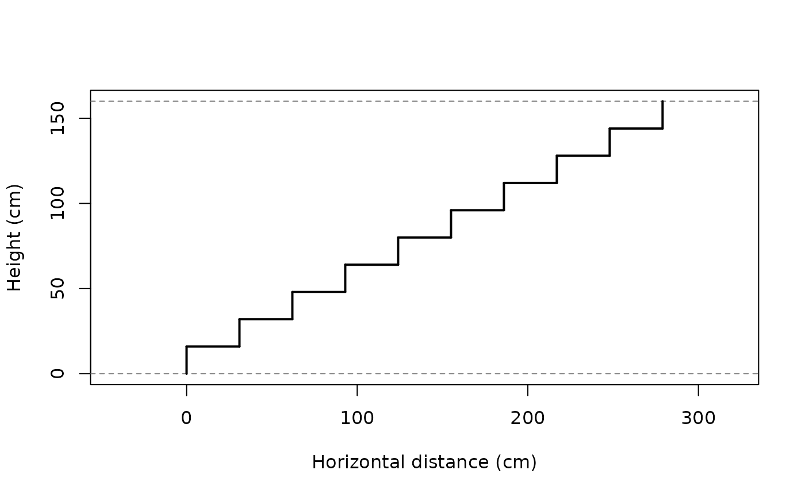

Build the complete table of stair solutions (embedded geometry)
Source:R/build_solutions_table.R
build_solutions_table.RdComputes one summary row for each valid number of steps and each going
scenario generated by generate_going_scenarios. Each row
includes the complete stair geometry, generated with
build_geometry, as a list-column named geometry.
Arguments
- candidates
A
data.framereturned byoptimal_nrisers.- max_horizontal_run
Maximum available horizontal run (cm).
- blondel_target
Target value for Blondel's formula
2 * rise + going(cm). Default is 63.
Value
Return a data.frame (with additional class
stair_solutions) containing one row per combination of
number of steps and going scenario. The returned data frame includes
the following columns:
n_risers: Number of steps to climb.step_rise: Step height (rise).rise_target_deviation: Deviation from the target step height.going: Standard going.scenario: Name of the going scenario.horizontal_run: Total horizontal run.blondel: Value of Blondel's formula (\(2h + g\)).blondel_target_deviation: Deviation from the Blondel target.has_landing: Whether the solution includes a landing.horizontal_run_exceeded: Whether the available horizontal run is exceeded.landing_impossible: Whether a landing is required but impossible.is_valid: Whether the solution satisfies all design rules.geometry: A list-column containing the complete stair geometry as adata.frame.
Details
The geometry associated with a solution
can be accessed directly with solution$geometry[[1]].
Examples
candidates <- optimal_nrisers(160)
tbl <- build_solutions_table(candidates, max_horizontal_run = 1000)
head(tbl)
#>
#> 6 valid solution(s)
#> n_risers step_rise rise_target_deviation going scenario
#> 1 10 16.00000 0.000000 31.00000 no_landing_blondel
#> 2 10 16.00000 0.000000 31.00000 no_landing_uniform
#> 3 10 16.00000 0.000000 31.00000 landing_standard
#> 4 10 16.00000 0.000000 31.00000 landing_max
#> 5 10 16.00000 0.000000 31.00000 landing_uniform
#> 6 9 17.77778 1.777778 27.44444 no_landing_blondel
#> horizontal_run blondel blondel_target_deviation has_landing
#> 1 279.0000 63.0000 0.00000 FALSE
#> 2 1000.0000 143.1111 80.11111 FALSE
#> 3 310.0000 63.0000 0.00000 TRUE
#> 4 1000.0000 63.0000 0.00000 TRUE
#> 5 1000.0000 132.0000 69.00000 TRUE
#> 6 219.5556 63.0000 0.00000 FALSE
#> horizontal_run_exceeded landing_impossible is_valid
#> 1 FALSE FALSE TRUE
#> 2 FALSE FALSE TRUE
#> 3 FALSE FALSE TRUE
#> 4 FALSE FALSE TRUE
#> 5 FALSE FALSE TRUE
#> 6 FALSE FALSE TRUE
#> ('geometry' list-col is hidden - access via $geometry[[i]])
plot(tbl$geometry[[1]])
